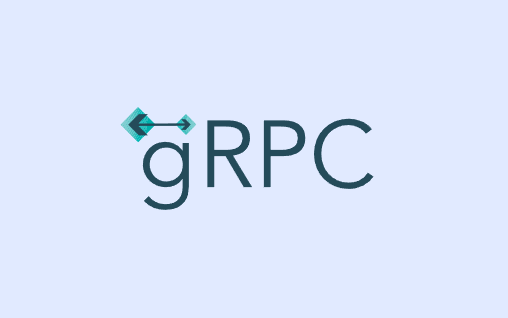

Гайд по gRPC

gRPC — это современный фреймворк для удаленного вызова процедур (RPC), разработанный Google. Он позволяет приложениям взаимодействовать друг с другом так, как будто они находятся на одном сервере, используя HTTP/2 для передачи данных и Protocol Buffers (protobuf) для сериализации. gRPC поддерживает множество языков программирования и обеспечивает высокую производительность и эффективность при передаче данных.
Если вы работаете с микросервисной архитектурой или хотите улучшить взаимодействие между сервисами, gRPC станет отличным выбором.
- Основные концепции gRPC
Перед тем как начать работу с gRPC, важно понять его ключевые компоненты:
- Сервис (Service): Определение интерфейса, который включает в себя методы, доступные для удаленного вызова.
- Клиент (Client): Приложение, которое вызывает методы сервиса.
- Сервер (Server): Приложение, которое реализует методы сервиса и обрабатывает запросы клиентов.
- Protocol Buffers (protobuf): Формат сериализации данных, используемый для определения структуры сообщений.
-
Канал (Channel): Абстракция, представляющая соединение между клиентом и сервером.
-
Установка gRPC
Для начала работы вам нужно установить gRPC. Вот несколько популярных способов:
- Установка на Python
Установите необходимые пакеты:
pip install grpcio grpcio-tools
- Установка на другие языки
gRPC поддерживает множество языков программирования, таких как Go, Java, C++ и другие. Подробные инструкции по установке можно найти на официальном сайте gRPC.
- Базовые команды и примеры
gRPC используется для определения сервисов и генерации кода для клиента и сервера. Вот пример простого сервиса на Python:
- Определение сервиса (proto-файл)
Создайте файл service.proto:
syntax = "proto3";
service MyService {
rpc SayHello (HelloRequest) returns (HelloResponse);
}
message HelloRequest {
string name = 1;
}
message HelloResponse {
string message = 1;
}
- Генерация кода
Используйте protoc для генерации кода:
python -m grpc_tools.protoc -I. --python_out=. --grpc_python_out=. service.proto
- Реализация сервера
Создайте файл server.py:
import grpc
from concurrent import futures
import service_pb2
import service_pb2_grpc
class MyServiceServicer(service_pb2_grpc.MyServiceServicer):
def SayHello(self, request, context):
return service_pb2.HelloResponse(message=f'Hello, {request.name}!')
server = grpc.server(futures.ThreadPoolExecutor(max_workers=10))
service_pb2_grpc.add_MyServiceServicer_to_server(MyServiceServicer(), server)
server.add_insecure_port('[::]:50051')
server.start()
server.wait_for_termination()
- Реализация клиента
Создайте файл client.py:
import grpc
import service_pb2
import service_pb2_grpc
channel = grpc.insecure_channel('localhost:50051')
stub = service_pb2_grpc.MyServiceStub(channel)
response = stub.SayHello(service_pb2.HelloRequest(name='World'))
print(response.message)
- Мониторинг и логирование
Для мониторинга gRPC-сервисов можно использовать такие инструменты, как: - Prometheus: Сбор метрик. - Grafana: Визуализация данных.
-
Советы по оптимизации
-
Используйте аутентификацию: Защитите ваши gRPC-сервисы с помощью TLS.
- Оптимизируйте производительность: Используйте асинхронные вызовы и настройте параметры HTTP/2.
- Управляйте ресурсами: Установите лимиты на использование ресурсов для клиентов и серверов.
Заключение
gRPC — мощный инструмент для создания высокопроизводительных и масштабируемых микросервисов. Начав с базовых концепций и освоив основные команды, вы сможете эффективно использовать его возможности. Помните, что работа с gRPC требует практики, поэтому не бойтесь экспериментировать!
Готовы начать? Удачи в изучении gRPC! 🚀
Этот гайд поможет вам начать работу с gRPC и понять его основные концепции и возможности.